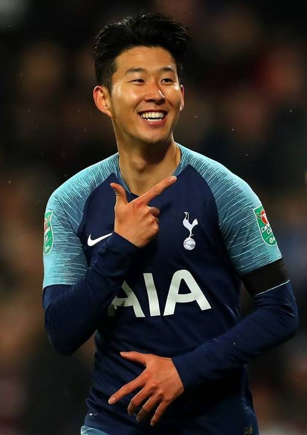

손흥민

이력
- 2010함부르크 SV (독일)
- 2013.06 ~ 2015.08 TSV 바이엘 04 레버쿠젠 (독일)
- 2015.08 ~ 토트넘 홋스퍼 FC (잉글랜드)
- 15/16시즌 : 40경기 (선발22경기) 8골 5도움
프리미어리그 : 28경기(13) 4골 1도움
FA컵 4경기(3) 1골 1도움
리그컵 : 1경기(0)
유로파 :7경기(6) 3골 3도움
)
- 16/17시즌 : 47경기(선발 34경기) 21골10도움
프리미어리그 : 34경기(23) 14골 9도움
FA컵 5경기(5) 6골 1도움
챔스 8경기(7) 3골 1도움
챔스예선 1경기(1)
- 17/18시즌 : 53경기(선발 39경기) 18골11도움
프리미어리그 : 37경기(27) 12골6도움
FA컵 7경기(5) 2골3도움
챔스 : 7경기(5) 4골
- 18/19시즌 : 20골 9도움
프리미어리그 : 12골6도움